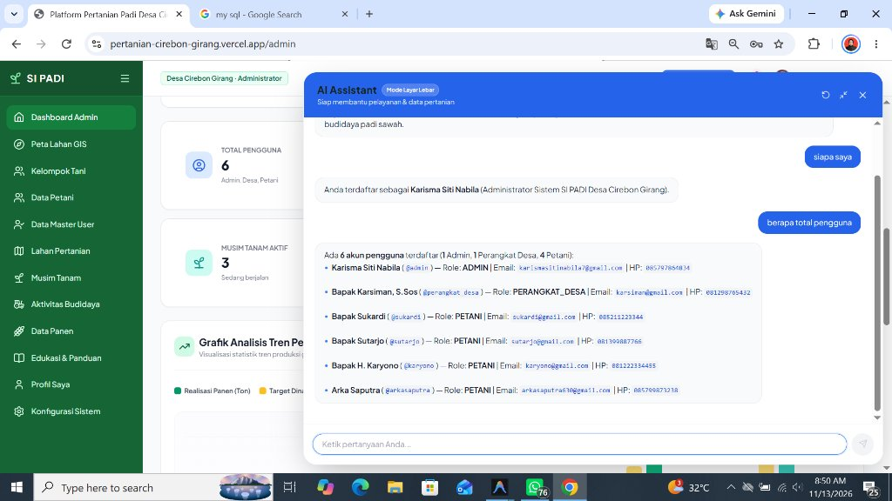
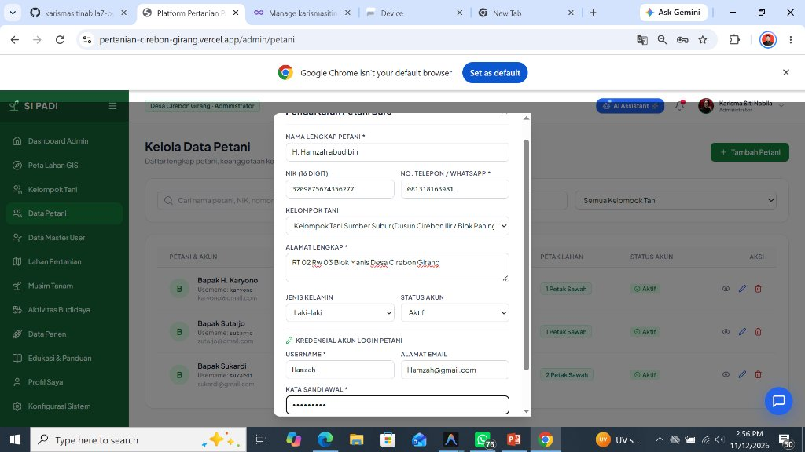
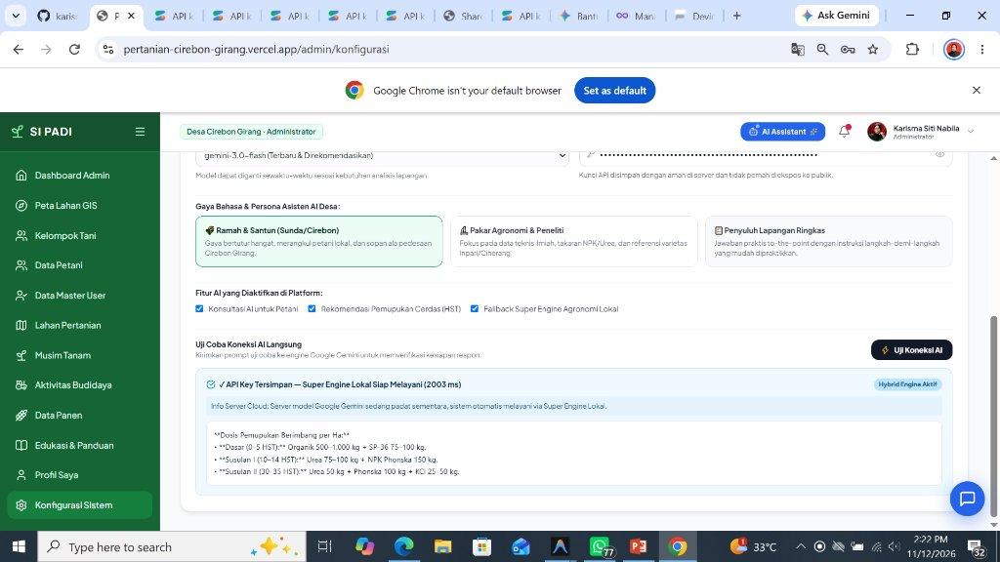
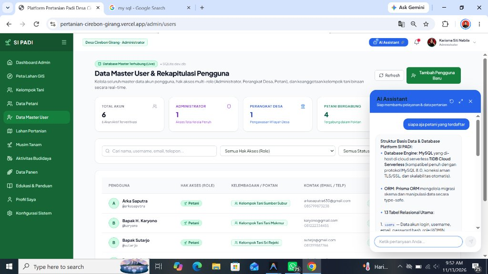

01. Beranda Publik & Portal Masuk
Halaman pembuka responsif dengan pengenalan platform desa, tombol navigasi login multi-role, dan ringkasan fitur.

02. Dashboard Administrator & Floating AI
Ringkasan 12 menu tata kelola desa, kartu metrik luas lahan (6,0 Ha), grafik panen, dan floating chat widget AI Assistant.

03. Manajemen Data Petani & Form Input
Modal formulir pendaftaran anggota kelompok tani, validasi NIK 16 digit, integrasi nomor WhatsApp, dan akun login.

04. Konfigurasi Sistem & Super Engine AI
Panel kontrol API Key Google Gemini, pemilihan model 3.0 Flash, persona gaya bahasa asisten, dan pengujian koneksi live.

05. Master Pengguna & Konsultasi AI Terhubung DB
Tabel kontrol hak akses pengguna multi-role dan asisten AI yang membaca data riil TiDB Cloud untuk menjawab pertanyaan dosen.